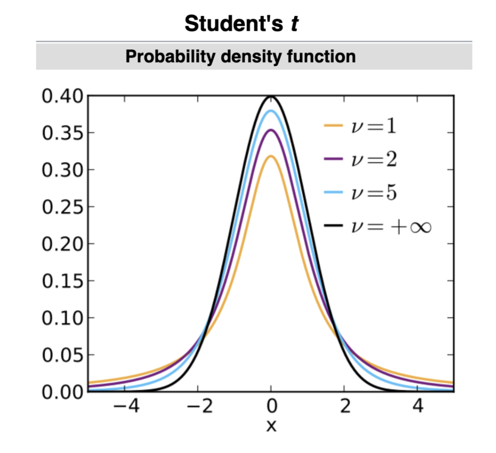

This distribution with η\etaη degrees of freedom is given with pdf:f(x)=Γ(η+12)ηπΓ(η2)(1+x2η)−η+12f(x) = \frac{\Gamma(\frac{\eta + 1}{2})}{\sqrt{\eta \pi} \Gamma(\frac{\eta}{2})}\paren{1 + \frac{x^2}{\eta}}^{-\frac{\eta + 1}{2}}f(x)=ηπΓ(2η)Γ(2η+1)(1+ηx2)−2η+1
